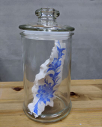

|  | 作品名稱 | 花在微觀下的生命創造實驗室 A Microcosm of Flowers in a Laboratory that Bestows Life |
| 作者 | 曾祥軒Zeng Siang-syuan | |
| 年代 | 2020 | |
| 尺寸 | 作品尺寸不一，最小：12x12x22 最大：32x7x11 | |
| 作品說明 | 承載著傳統青花瓷的容器記憶轉換，以花蕊在微觀下的單位型為發想，將其分解-繁殖-組合，創造出新的生命體，並建構出實驗室的研究型態。 紋樣為芍藥纏枝紋，芍藥又稱為花相，為花中之宰相，象徵智慧美，姿色瑰麗而鮮豔，自古就作為愛情與友情之花，以表達結情之約或惜別之情。 |